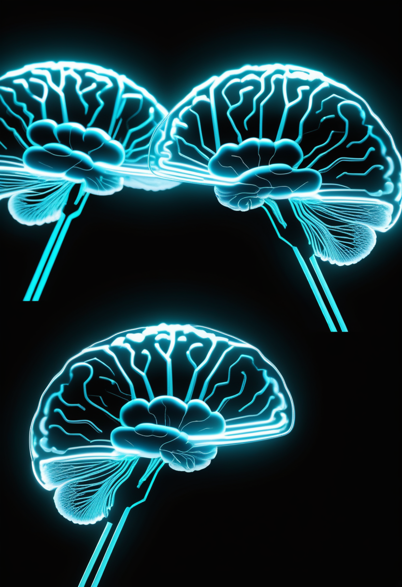
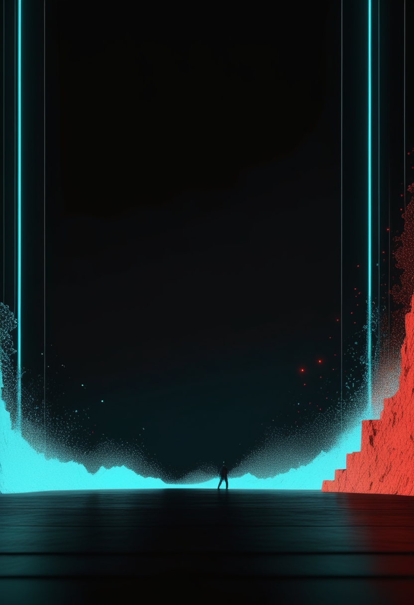
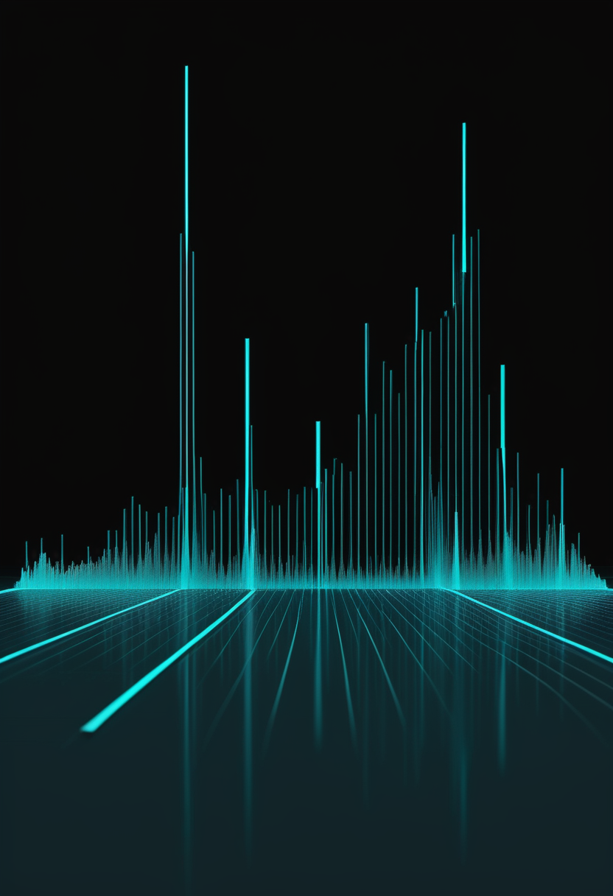
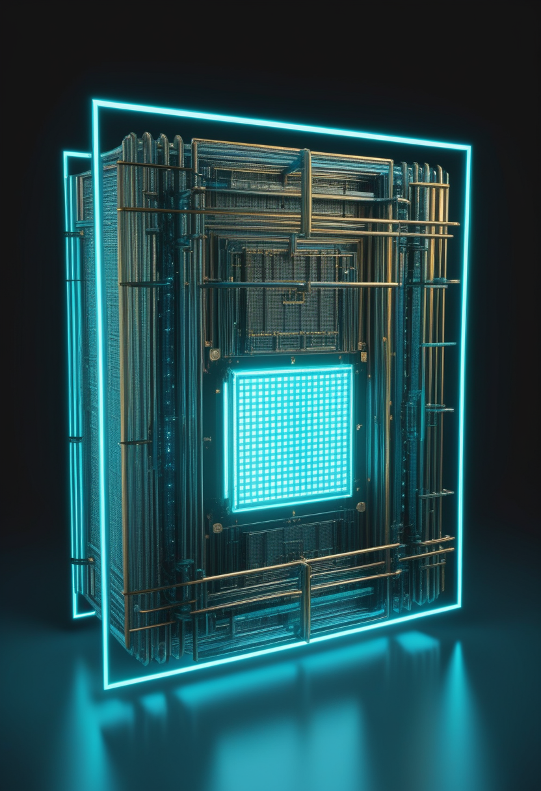

Neuralinkは11月25日、米FDAから重度麻痺のALS患者を対象にした埋込み型BCIの『LINK Pivotal Study』実施承認を得たと発表した。米国で初めての埋込み型BCIの本格治験で、販売承認そのものではないが、意思伝達手段としての実用化に向けた最終段階へ進んだ。基盤の章ではエボラが確定1万2千例、米国の麻疹が6千例をそれぞれ突破した現実を、畏敬の章ではHeraが撮影したディモルフォスの衝突跡と量子誤り訂正の新記録を届ける。美の章では、Neuralinkの本格治験入りを受けて『脳データをどう守るか』という問いが一段と切実になっていることを取り上げる。
Neuralinkは11月25日、米FDAから『LINK Pivotal Study』の実施承認を得たと発表した。重度の麻痺があるALS(筋萎縮性側索硬化症)の患者を対象に、考えるだけでパソコンなどのデジタル機器を操作し、日常生活の自立につながるかを検証する。ピボタル試験は販売承認の申請に必要な最終段階の治験で、今回の承認は販売を認めるものではない。同社はこれまでの試験で30人超の参加者に埋め込んできたとしている。埋込み型BCIが『少人数の実証』から『承認を目指す本格治験』へ移る大きな一歩で、詳しくは自由の章で。なお基盤の章で届けるとおり、エボラの確定例は11/25号時点の11,613例(WHO)から12,021例(DRC保健省)へ、米国の麻疹も11/26号時点の5,838例から6,039例へ、それぞれ新たな節目を超えた。
アイルランドの患者が、承認済みのSMA治療薬リスジプラム(エブリスディ)を、主要な治療センターの人員不足のため受け取れていないと訴えた。患者の一人は『10月1日から使えるはずだった』と話している。同国では成人患者への薬のアクセスが長年の課題とされてきた。
Cell Reportsに掲載された研究で、CCN1というタンパク質の働きが強まるとSMAの心筋細胞の機能が落ちる可能性が示された。CCN1を阻害する分子を標準治療と組み合わせると、単独より心筋細胞の収縮が大きく改善したという。基礎研究段階で、掲載日と研究モデルの詳細は要確認。
承認された薬が人員不足で届かないアイルランドの現実と、心臓という新しい標的を探す基礎研究は、同じSMA医療の違う段にある課題を映している。治療の選択肢が増えても、それが実際に患者に届くかどうかは別の問題として残り続ける。
Neuralinkは11月25日、米FDAから『LINK Pivotal Study』の実施承認を得たと発表した。重度麻痺のALS患者を対象に、考えるだけでデジタル機器を操作し日常生活の自立につながるかを検証する。ピボタル試験は販売承認に必要な最終段階の治験で、今回の承認そのものは販売を認めるものではない。同社はこれまでの試験で30人超の参加者に埋め込んできたとしている。参加人数や施設数は公表されていない。

Precision Neuroscienceは、ALS支援団体Team Gleasonと協力し、薄膜電極を使う脳表面インプラント『Layer 7』について、患者・医療者向けの啓発を共同で行うと発表した。Synchronの治験登録停止の続報や、視線入力分野の新発表は本号では確認できなかった。
FDAの承認で埋め込み型BCIは『本格治験』の段へ進み、Precisionは当事者団体との連携という別の角度から現場に近づいている。視線入力の新発表は本号も確認できなかった。

コンゴ民主共和国(DRC)保健省のデータで、確定例は12,021例となり、その約半数が死亡した。DRCで過去17回の流行のうち最悪の規模で、2014〜16年の西アフリカ流行(死者約1万1千人)の死者数に迫りつつある。対応拠点ブニアの北約25kmにある鉱山町イガ・バリエールで軍と武装勢力の戦闘が再開し、WHOの担当者によると一部地域に入れず、接触者の追跡や治療センターの人員に影響が出ている。

CDC集計によると、2026年の米国の麻疹確定例は11/24時点で6,039例(47の地域)、うち97%にあたる5,829例が集団発生に関連する。2025年通年の2,289例の2.6倍を超えた。最多のペンシルベニア州は1,679例、関連死9人、入院340人(11/26報道)。全米の死者数は『連邦集計で9人』との報道があるが、州単独でも9人とされており集計方法に差がある(要確認)。
エボラは1万2千例、麻疹は6千例という新たな節目をそれぞれ超えた。どちらも『排除・制圧の段階にはまだ遠い』という現実を、数字がそのまま映している。
ESAの探査機Heraが11/25、小惑星ディモルフォスの初の接近画像を公開した。2022年にNASAのDARTが衝突した面が、スタジアムほどの大きさのクレーターとして平らにえぐれていた。ミッション科学者は、衝突でディモルフォスが軌道上で不規則に回転(タンブリング)していると説明。12月には約13kmまで近づき、高解像度撮影と質量測定を行う(ミッションは2027年6月まで)。

Quantinuumの100量子ビット機『Helios』で、誤り訂正された量子メモリの失敗率が約0.0005%(100万回の操作で約5回)に下がったとLive Scienceが報道した。カラーコードという誤り訂正方式で、量子ビットを増やすほど性能が上がるかを検証した。発表自体は10月だが、本号で初めて取り上げる。
Heraは惑星防衛の『現場検証』を、Quantinuumの誤り訂正記録は量子計算の『信頼性』を、それぞれ一歩進めた。どちらも、理論を現実の精度へ落とし込む地道な積み重ねの成果である。
Fortuneは、Google DeepMindやAnthropicなどが哲学者の知見を求めている現状を特集した。2024年設立の米非営利団体Eleos AI Researchの主任研究者は、現在のモデルは意識を持たない可能性が高いが、将来のモデルの可能性を退けるのは誤りだと述べている。
脳信号から思考や想像、感情に関わるパターンを読み取る技術が進む中、精神のプライバシーと認知の自由を守る『ニューロライツ』の必要性を論じる論考が出た。チリや米国各州の脳データ保護法の流れと重なるテーマで、Neuralinkが本格治験に入った今号では一段と切実な問いになっている。
Neuralinkの本格治験入りで、脳データを誰がどう扱うかは『将来の問題』から『目の前の問題』になった。機械にどんな権利を負うかという問いと、人の脳をどう守るかという問いが、同じ週に並んで動いている。
金曜日の便り。Neuralinkが米国初の埋込み型BCIのピボタル試験承認を得て、意思伝達手段としての実用化に向けた最終段階へ進んだ。基盤の章では、エボラが確定1万2千例、米国の麻疹が6千例をそれぞれ突破した現実を届けた。自由の章では、NeuralinkのFDA承認とPrecision NeuroscienceのALS支援団体との連携を、命の章ではアイルランドの薬アクセス問題とSMAの心臓を守る新標的研究を取り上げた。畏敬の章ではHeraが撮影したディモルフォスの衝突跡と量子誤り訂正の新記録を、美の章では、脳データをどう守るかという問いが一段と切実になっていることを伝えた。
良い一日を。 — JaH